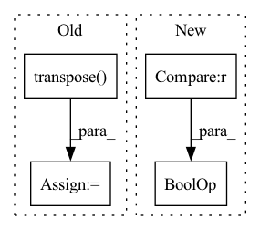

Pattern ID :32360

Before Change
np_img = cv2.cvtColor(np_img, cv2.COLOR_BGR2RGB)
if norm:
np_img = np.transpose(np_img, (2, 0, 1))
np_img = np_img.astype("float32") / 255
return np_img
After Change
np_img = cv2.imdecode(nparr, cv2.IMREAD_GRAYSCALE)
else:
np_img = cv2.imdecode(nparr, cv2.IMREAD_UNCHANGED)
if len(np_img.shape) == 3 and np_img.shape[2] == 4:
np_img = cv2.cvtColor(np_img, cv2.COLOR_BGRA2RGB)
else:
np_img = cv2.cvtColor(np_img, cv2.COLOR_BGR2RGB)
In pattern: SUPERPATTERN
Frequency: 3
Non-data size: 4
Instances
Fragment ID: 94508102
Project Name: sanster/lama-cleaner
Commit Name: 1e2c8fd34865e618efe98993ab5f8a77d0f9d09e
Time: 2021-11-29
Author: cwq1913@gmail.com
File Name: lama_cleaner/helper.py
M Class Name: AnonimousClass
N Class Name: AnonimousClass
M Method Name: load_img(2)
N Method Name: load_img(3)
M Parent Class:
N Parent Class:
M File Name: lama_cleaner/helper.py
N File Name: lama_cleaner/helper.py
M Start Line: 43
M End Line: 55
N Start Line: 44
N End Line: 54
'>
Before Change
if text.ndim==2: //gray-scale image
text=np.expand_dims(text,0).astype(np.float32)
elif text.ndim==3:
text = np.transpose(text, [2, 0, 1]).astype(np.float32)
elif text.ndim==4:
text = np.transpose(text, [0, 3, 1, 2]).astype(np.float32)
return text
After Change
def text_backend_adaption(text):
if get_backend() == "tensorflow":
if text.dtype==np.int64 and text.ndim ==1:
pass
elif text.ndim ==2:
text=text.astype(np.float32)
'>
Fragment ID: 94508107
Project Name: allanyiin/trident
Commit Name: d96abdbdfe766581ae99a66332f590e3c34e8bd6
Time: 2020-11-29
Author: allan@asiaminer.com.tw
File Name: trident/data/text_common.py
M Class Name: AnonimousClass
N Class Name: AnonimousClass
M Method Name: text_backend_adaption(1)
N Method Name: text_backend_adaption(1)
M Parent Class:
N Parent Class:
M File Name: trident/data/text_common.py
N File Name: trident/data/text_common.py
M Start Line: 24
M End Line: 36
N Start Line: 23
N End Line: 33
'>
Before Change
image = cv2.cvtColor(image, cv2.COLOR_RGB2BGR)
image = torch.from_numpy((image / 255).transpose(2, 0, 1)).unsqueeze(0).float()
if prev_mask is None:
mask = torch.zeros_like(image[:, :1, :, :])
else:
logger.info("InteractiveSeg run with prev_mask")
mask = torch.from_numpy(prev_mask / 255).unsqueeze(0).unsqueeze(0).float()
pred_probs = self.predictor(image, clicks, mask)
pred_mask = pred_probs > 0.5
pred_mask = (pred_mask * 255).astype(np.uint8)
// Find largest contour
// pred_mask = only_keep_largest_contour(pred_mask)
// To simplify frontend process, add mask brush color here
fg = pred_mask == 255
bg = pred_mask != 255
pred_mask = cv2.cvtColor(pred_mask, cv2.COLOR_GRAY2BGRA)
// frontend brush color "ffcc00bb"
pred_mask[bg] = 0
pred_mask[fg] = [255, 203, 0, int(255 * 0.73)]
After Change
input_point.append([x, y])
input_label.append(click[2])
if img_md5 and img_md5 != self.prev_img_md5:
self.prev_img_md5 = img_md5
self.predictor.set_image(rgb_np_img)
'>
Fragment ID: 94508110
Project Name: sanster/lama-cleaner
Commit Name: a6aec566d963e67c17c0871dca1c89d26e1cdcaa
Time: 2023-04-06
Author: cwq1913@gmail.com
File Name: lama_cleaner/plugins/interactive_seg.py
M Class Name: InteractiveSeg
N Class Name: InteractiveSeg
M Method Name: forward(4)
N Method Name: forward(4)
M Parent Class: BasePlugin
N Parent Class: BasePlugin
M File Name: lama_cleaner/plugins/interactive_seg.py
N File Name: lama_cleaner/plugins/interactive_seg.py
M Start Line: 242
M End Line: 264
N Start Line: 48
N End Line: 75